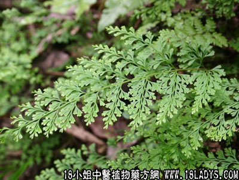

金花草(中药材植物名:孔雀尾)(植物科目:林蕨科)

古籍名：乌韭《神农半草经》。
别名：孔雀尾。
植物名：乌韭。
生长环境：本品为陆生草本。生长在靠山脚，或近水沟的草丛，或长在湿石上。
分布：广东各地都有分布，长江以南和西南各省均有，此外热带亚洲亦有。
入药部分：全草。
采集期：全年，夏、秋为多。
自采地点：山岗、荒地、屋边。
性味：性微凉、味微苦。
功能：解鸦片烟癖、散瘀、清热解毒。
主治、用量和用法：1、鸦片烟癖：干用5钱至1两，清水煎服，渐服渐愈；2、跌打积瘀：配伍用。
验方：（跌打积瘀方）金花草5钱、透骨消钱、火罗伞3钱、九层塔5钱、清水三碗，煎成一碗服。
（方解）金华草古名乌韭，《本草纲目》言其甘寒，治皮肤，往来寒热，利小肠膀胱气，治疗黄疸，金疮内塞，烫火伤，乌发，补中益气，近人应用于镇咳，治伤风感冒，消肿毒。本市医生用治烟癖、跌打、可见其功用不少。在本方取其清肝凉血，配伍透骨消入骨消瘀，火罗伞通利血脉，九层塔祛风消肿。组成治跌打之剂，有一定疗效。
（方歌）跌打积瘀肿痛饶，金花草合透骨消，九层塔下大罗伞，瘀去新生血自调。
本文解释权归中药大全，本文地址：https://www.daquan.com/post/1521.html